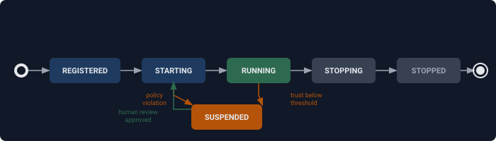

Design: Agent Registry¶
Agent identity, grants, and trust scoring for Presidium.
Status: Draft (revised June 2026)
Package: presidium (protocol + defaults) / presidium-contrib (Postgres, AGT-style trust)
Milestone: M2
Requirements: agent-registry-requirements.md
Research: agent-registry-research.md
Problem Statement¶
In current agent systems, agents are anonymous. They have no persistent identity, no declared grants, no trust history. Any agent can access any resource, call any tool, use any LLM provider. There's no way to answer: "Which agents are running? What are they allowed to do? Should they be trusted?"
Goals¶
- Every agent has a persistent identity with structured grants
- Grants are evaluated by the CEL policy engine at every governance checkpoint
- Trust scores track agent reliability and influence grant activation
- Dynamic spawning enforces privilege containment (child <= parent grants)
- The registry is a Protocol -- backends are swappable without changing agent code
Non-Goals (M2)¶
- Trust contagion / network propagation (M4)
- Zanzibar-style ReBAC / tuple store (M3+)
- SPIFFE/JWT-SVID credentials (M3+)
- Agent groups / teams (M3)
- Cross-deployment federation (M4+)
Data Model¶
AgentRecord¶
from __future__ import annotations
from dataclasses import dataclass, field
from datetime import datetime
from enum import Enum
from typing import Any
class AgentStatus(Enum):
REGISTERED = "registered"
STARTING = "starting"
RUNNING = "running"
STOPPING = "stopping"
STOPPED = "stopped"
SUSPENDED = "suspended"
class TrustTier(Enum):
TRUSTED = "trusted" # >= 0.7
STANDARD = "standard" # 0.3 - 0.7
RESTRICTED = "restricted" # < 0.3
@dataclass
class Grant:
"""A structured authorization grant held by an agent.
Grants are data -- the CEL policy engine evaluates them.
Grants are NOT policies -- policies decide whether to honor grants.
"""
resources: list[str] # ["tool:database", "tool:web_search", "llm:claude-sonnet"]
actions: list[str] # ["read", "write", "invoke"]
scope: dict[str, str] = field(default_factory=dict) # {"environment": "prod", "tenant": "acme"}
condition: str | None = None # CEL expression: "agent.trust.value >= 0.7"
expires_at: datetime | None = None
id: str | None = None # Auto-generated UUID; stable identifier for removal
@dataclass
class AgentRecord:
"""Identity and governance metadata for a registered agent."""
# Identity
agent_id: str # SPIFFE-compatible URI: presidium://{trust_domain}/{path}
name: str # Short name for Civitas message routing
public_key: str # Ed25519 public key (base64) — cryptographic identity binding
# Governance
grants: list[Grant] = field(default_factory=list)
trust_value: float = 0.5 # 0.0 - 1.0
trust_tier: TrustTier = TrustTier.STANDARD
status: AgentStatus = AgentStatus.REGISTERED
# Accountability
owner: str | None = None # Human sponsor email/ID (policy-enforced, not schema-enforced)
# Lineage (dynamic spawning)
parent_agent_id: str | None = None # Parent agent if dynamically spawned
# Metadata
description: str | None = None
agent_version: str | None = None # App-level semver, optional
capabilities: list[str] = field(default_factory=list) # Civitas routing tags
metadata: dict[str, Any] = field(default_factory=dict)
# Lifecycle
revision: int = 0 # Monotonic, incremented on every mutation
created_at: datetime = field(default_factory=datetime.utcnow)
updated_at: datetime = field(default_factory=datetime.utcnow)
Agent Identity Format¶
Agent identities use a SPIFFE-compatible URI scheme:
presidium://{trust_domain}/{path}
Trust domain: the authority that governs this agent. Typically an organization or deployment environment.
Path: hierarchical, encodes runtime and agent name. Lineage is encoded in the path for dynamically spawned agents.
Examples:
presidium://acme.com/prod/researcher # static agent in production
presidium://acme.com/prod/orchestrator/child/w-3 # spawned child, lineage in path
presidium://acme.com/staging/analyst # staging environment
presidium://local/researcher # dev/local (no trust domain configured)
presidium://partner.org/prod/their-agent # federated (different org)
Cryptographic binding: each agent's identity is bound to a keypair -- AgentRecord.public_key plus the new (2026-08-24) public_key_algorithm field ("ed25519" default, "ec_p256" for a real SPIFFE identity). presidium.identity.verify_agent_signature() dispatches on it, so verification is algorithm-aware, not hardcoded to Ed25519. Civitas already provisions Ed25519 keypairs for message signing (M4.2a); Presidium reuses them for identity by default.
SPIFFE compatibility: the presidium:// scheme follows the same structural conventions as spiffe:// URIs (trust domain + hierarchical path) -- confirmed as a direct, unmodified mapping against a real SPIRE server (presidium://{trust_domain}{path}, path already carrying its own leading slash). When the user installs presidium-contrib[spiffe], the identity is backed by a real SPIFFE X.509-SVID without changing the URI format. This aligns with CNCF standards for enterprise interoperability.
Trust domain configuration: the trust_domain is set via presidium.registry.trust_domain in topology YAML (default: "local"). It forms the authority portion of the presidium:// URI: presidium://{trust_domain}/{path}.
M2 behavior: identities are generated locally from {trust_domain}/{runtime}/{agent_name} using configuration from topology YAML. Ed25519 signing provides cryptographic verification. No CA or SPIRE infrastructure required.
M3+ upgrade path -- real, shipped, 2026-08-24: presidium-contrib[spiffe] (presidium_contrib.spiffe.SpiffeIdentitySource + bind_identity_to_registry()) issues real X.509-SVIDs via SPIRE, with real automatic credential rotation (X509Source.subscribe_for_updates(), bridged into this codebase's own asyncio world -- the real spiffe SDK's own Workload API client is a blocking, thread-based API, confirmed directly, not asyncio-native). Verified end to end against a real, running SPIRE v1.15.3 server + agent, including a real fetched SVID's leaf certificate confirmed as genuine EC P-256 with the SPIFFE ID as its SAN URI, exactly as docs/design/spiffe-vendor-research-2026-08.md predicted. Certificate-based mTLS between agents and cross-deployment federation via trust domain bundles remain real, separate, NOT-yet-built future directions -- this milestone is agent-level identity binding + rotation only, not a replacement for or extension of Civitas's own gateway-level mTLS (M7, already shipped, a genuinely separate mechanism -- see presidium-server-requirements.md FR-3.2).
Agent States¶

State transitions: - REGISTERED -> STARTING (on_start hook) - STARTING -> RUNNING (message loop entered) - RUNNING -> STOPPING (on_stop hook or shutdown signal) - STOPPING -> STOPPED (message loop exited) - STARTING -> SUSPENDED (trust below threshold during startup) - RUNNING -> SUSPENDED (trust drops below threshold) - SUSPENDED -> STARTING (human review approved or trust restored via API)
Trust Score¶
Trust is a Protocol -- the default implementation uses a simple linear model. Enterprise deployments can swap in an AGT-style adaptive scorer via contrib.
class TrustEvent(Enum):
SUCCESS = "success"
FAILURE = "failure"
POLICY_VIOLATION = "policy_violation"
HUMAN_OVERRIDE = "human_override"
class TrustScorer(Protocol):
@property
def value(self) -> float: ... # 0.0 - 1.0
@property
def tier(self) -> TrustTier: ...
@property
def last_updated(self) -> datetime: ...
def record_event(self, event: TrustEvent) -> None: ...
class LinearTrustScore:
"""Default M2 implementation. Linear decay, 3 tiers.
- SUCCESS: +0.02 (capped at 1.0)
- FAILURE: -0.05
- POLICY_VIOLATION: -0.10
- HUMAN_OVERRIDE: set to specified value
- Decay: -0.01 per hour with no positive signals
"""
TIER_THRESHOLDS = {
TrustTier.TRUSTED: 0.7,
TrustTier.STANDARD: 0.3,
}
**Decay implementation**: lazy-on-read with materialization-on-write. When `value` is read, the scorer computes:
```python
elapsed_hours = (now - self._last_positive_signal).total_seconds() / 3600
effective_value = max(0.0, self._stored_value - self.decay_rate * elapsed_hours)
When a trust event is recorded (write), the decayed value is materialized:
def record_event(self, event: TrustEvent) -> None:
# Materialize decay before applying event
self._stored_value = self.value # triggers lazy decay calculation
self._stored_value += self._deltas[event]
self._stored_value = max(0.0, min(1.0, self._stored_value))
if event == TrustEvent.SUCCESS:
self._last_positive_signal = datetime.now(UTC)
This avoids background timers and ensures deterministic reads within a single policy evaluation (trust doesn't change mid-evaluation).
### Grants in CEL
Grants are structured data the policy engine reads:
```cel
// Check if agent has read access to database
agent.grants.exists(g,
"tool:database" in g.resources &&
"read" in g.actions
)
// Check with scope
agent.grants.exists(g,
"tool:database" in g.resources &&
"read" in g.actions &&
g.scope.environment == "production"
)
// Trust-conditional grant (activates when trust >= 0.7)
// The condition field on the grant itself:
// Grant(resources=["tool:database"], actions=["write"], condition="agent.trust.value >= 0.7")
// At evaluation time, the policy engine checks both the grant match AND the condition.
Protocol contract for PolicyEngine implementations: before policy evaluation, the EvaluationContext.agent.grants list MUST be pre-filtered to exclude:
1. Expired grants (where expires_at is set and expires_at < now)
2. Grants with false conditions (where condition is set and evaluates to false against the current context)
This filtering is the PolicyEngine's responsibility, not the AgentRegistry's. All PolicyEngine implementations (CelPolicyEngine, OPA adapter, Cedar adapter) MUST implement this filtering. The enforce-grants default policy relies on this contract.
Registry Protocol¶
class AgentRegistry(Protocol):
"""Protocol for the agent identity store.
Snapshot semantics: lookup() returns an immutable snapshot of the
AgentRecord at the time of the call. If grants are modified after
lookup but before policy evaluation completes, the evaluation uses
the snapshot — not the mutated state. The snapshot includes the
revision number, enabling optimistic concurrency checks if needed.
In library mode (single process), this is naturally satisfied because
Python's GIL prevents concurrent mutation during a synchronous lookup.
In service mode (M3+), implementations MUST return a copy, not a
reference to mutable internal state.
"""
async def register(self, record: AgentRecord) -> AgentRecord: ...
async def deregister(self, name: str) -> None: ...
async def lookup(self, name: str) -> AgentRecord | None: ...
async def lookup_by_id(self, agent_id: str) -> AgentRecord | None: ...
async def list_agents(self,
status: AgentStatus | None = None,
trust_tier: TrustTier | None = None,
owner: str | None = None,
) -> list[AgentRecord]: ...
# Grant management
async def add_grant(self, name: str, grant: Grant) -> AgentRecord: ...
async def remove_grant(self, name: str, grant_id: str) -> AgentRecord: ...
async def has_grant(self, name: str, resource: str, action: str) -> bool: ...
# Trust management
async def record_trust_event(self, name: str, event: TrustEvent) -> AgentRecord: ...
async def set_trust(self, name: str, value: float, reason: str) -> AgentRecord: ...
# State management
async def update_status(self, name: str, status: AgentStatus) -> AgentRecord: ...
class RegistryAuth(Protocol):
"""Protocol for agent authentication against the registry."""
async def authenticate(self, request: RegistryRequest) -> str: ... # returns agent_id
Dynamic Spawning Integration¶
Real status, corrected 2026-08-25 -- this section's own pseudocode below was aspirational and
was never built, exactly the same class of gap as Grant.condition (documented, never
implemented) -- caught by the same external audit that found that one. Two genuinely different,
complementary mechanisms belong here, not one:
-
Real, built 2026-08-25:
presidium.providers.civitas_adapters.governed_spawn_check()/GovernedDynamicSupervisor-- policy-based authorization of the spawn ACT itself ("is this spawner allowed to create an agent of this class, with this config, at all"), using the exact sameGovernedToolProvider.check_grant()mechanism as every other PRE_TOOL decision in this codebase (resource=f"agent:{agent_class.__name__}",action="spawn",parameters={"name": name, **config}). This is what's actually implemented and tested today. -
Still not built -- a genuinely different, complementary check, not superseded by #1: privilege containment specifically -- a spawned child's OWN requested grants (if any are part of
config) must never exceed its parent's own grants, independent of whether the spawn itself is policy-authorized. The pseudocode below sketches this; it was never implemented (_is_subset/SpawnError/self.spawner_namedo not exist anywhere in this codebase) and remains a real, named follow-up, not something #1 replaces or makes unnecessary:
# NOT YET BUILT -- a real, separate follow-up to governed_spawn_check() above,
# not an alternative to it. Privilege containment (no grant escalation via
# spawning) is a different concern than "is this spawn authorized at all."
async def on_spawn_requested(self, agent_class, name, config):
parent_record = await self.registry.lookup(self.spawner_name)
requested_grants = config.get("grants", [])
for grant in requested_grants:
if not _is_subset(grant, parent_record.grants):
raise SpawnError(f"Grant {grant} exceeds parent's grants")
return True # approved
Registration/trust behavior once a spawn IS approved (by either or both mechanisms above):
- Registration: child is registered with
parent_agent_idset to spawner's agent_id. - Independent trust: child starts at
default_initial_trust(0.5), not inherited from parent.
Lineage in identity: when a child is spawned, its agent_id encodes the parent path:
- Parent: presidium://acme.com/prod/orchestrator
- Child: presidium://acme.com/prod/orchestrator/child/worker-3
This makes lineage visible in the identity itself — no registry lookup needed to determine parentage.
Persistence¶
| Mode | Backend | Consistency |
|---|---|---|
| Library (default) | InMemoryRegistry |
Single-process, no I/O |
| Library (durable) | SqliteRegistry |
WAL mode, BEGIN IMMEDIATE |
| Service | PostgresRegistry (presidium-contrib) |
SERIALIZABLE isolation |
All mutations are atomic with revision increment. Schema:
CREATE TABLE agent_records (
agent_id TEXT PRIMARY KEY, -- presidium://{trust_domain}/{path}
name TEXT UNIQUE NOT NULL,
public_key TEXT NOT NULL, -- Ed25519 public key (base64)
grants TEXT NOT NULL DEFAULT '[]', -- JSON array of Grant objects
trust_value REAL NOT NULL DEFAULT 0.5,
trust_tier TEXT NOT NULL DEFAULT 'standard',
status TEXT NOT NULL DEFAULT 'registered',
owner TEXT,
parent_agent_id TEXT,
description TEXT,
agent_version TEXT,
capabilities TEXT NOT NULL DEFAULT '[]', -- JSON array
metadata TEXT NOT NULL DEFAULT '{}', -- JSON object
revision INTEGER NOT NULL DEFAULT 0,
created_at TEXT NOT NULL,
updated_at TEXT NOT NULL
);
CREATE TABLE trust_events (
id INTEGER PRIMARY KEY AUTOINCREMENT,
agent_id TEXT NOT NULL REFERENCES agent_records(agent_id),
event_type TEXT NOT NULL, -- SUCCESS | FAILURE | POLICY_VIOLATION | HUMAN_OVERRIDE
value_before REAL NOT NULL,
value_after REAL NOT NULL,
tier_before TEXT NOT NULL,
tier_after TEXT NOT NULL,
timestamp TEXT NOT NULL, -- ISO 8601
details TEXT NOT NULL DEFAULT '{}' -- JSON, optional context
);
CREATE INDEX idx_trust_events_agent ON trust_events(agent_id, timestamp);
The trust_events table preserves the full history of trust score changes. This is M4 training data -- the LearningTrustScorer uses this history to learn which signals are most predictive of agent reliability. The table is append-only and indexed by agent + timestamp for efficient range queries.
Authentication¶
| Mode | Mechanism | Implementation |
|---|---|---|
| Library (in-process) | Trust the runtime | InProcessAuth -- always returns the agent's identity |
| Service (bus) | Civitas Ed25519 message signing | MessageBusAuth -- verifies sender signature |
| Service (HTTP) | SPIFFE / JWT (M3+) | SpiffeAuth in presidium-contrib |
Audit¶
Every mutation emits a Civitas AuditEvent:
AuditEvent(
event="agent.registered", # or grant.added, trust.updated, status.changed
ts="2026-06-11T10:00:00Z",
agent="researcher",
signer_id="researcher",
details={
"agent_id": "presidium://acme.com/prod/researcher",
"revision": 1,
"old_value": None,
"new_value": {"name": "researcher", ...},
}
)
Civitas Integration Points¶
| Civitas Hook | Presidium Action |
|---|---|
RegistryListener.on_register |
Create/update AgentRecord in governance registry |
RegistryListener.on_deregister |
Mark AgentRecord as STOPPED |
AgentProcess.on_start |
Update status to RUNNING |
AgentProcess.on_stop |
Update status to STOPPED |
AgentProcess.on_error |
Record FAILURE trust event |
EvalAgent.on_eval_event |
Record trust events based on eval results |
DynamicSupervisor.on_spawn_requested |
Policy authorization (real, governed_spawn_check()) + register child; subset grant check still not built (see "Dynamic Spawning Integration" above) |
AuditSink.emit |
Forward governance audit events |
Design Decisions¶
| # | Decision | Choice | Alternatives Considered | Rationale |
|---|---|---|---|---|
| D1 | Grant grammar | K8s-style structured Grant(resources, actions, scope, condition) |
OAuth scopes (too flat), Zanzibar tuples (overkill for M2), Cedar (duplicates CEL) | CEL reads structured data; condition field enables trust-gated grants; evolvable toward ReBAC via future relation field |
| D2 | Human sponsor | owner field on AgentRecord, schema-optional, policy-enforced |
Required (blocks prototyping), None (blocks enterprise) | Same schema for dev and prod; CEL policy enforces agent.owner != null in service mode |
| D3 | Trust scoring | 0.0-1.0 float, 3 tiers, Protocol (TrustScorer) |
AGT 0-1000 (too complex for M2), boolean (loses graduated autonomy) | Ships simple; Protocol allows AGT-style swap via contrib |
| D4 | Spawn inheritance | Subset grants (enforced), independent trust, lineage tracked | Inherit trust (enables trust laundering), inherit nothing (too restrictive) | Prevents privilege escalation; trust is behavioral, not hereditary |
| D5 | Versioning | Revision counter + optional agent_version metadata |
SemVer-only (conflates deployment), no versioning (audit gap) | Revisions serve audit; app version is metadata |
| D6 | Credentials | Trust-the-runtime (library) + bus signing (service), RegistryAuth Protocol |
SPIFFE (operationally heavy for M2), tokens (requires management) | Minimal ceremony; clean upgrade path to SPIFFE |
| D7 | Agent identity format | SPIFFE-compatible URI (presidium://) with Ed25519 binding |
UUID (opaque, no self-description), DID (no trust domain), raw SPIFFE (requires SPIRE infra) | Structured URIs carry trust domain + lineage, Ed25519 reuses Civitas infra, SPIFFE upgrade path via contrib. Aligns with CNCF standards for enterprise adoption. |
Open Questions (Deferred)¶
- Agent groups/teams: should grants be shareable across agent groups? (M3)
- Grant delegation with attenuation: should agents be able to delegate subsets of their grants to peers? (M3)
- Historical state queries: should
lookup(name, revision=N)return past state? (M3) - Trust score reset: should there be an API to reset trust to default? Or only set to specific value? (M2 -- lean toward set-to-value)
- Schema migration: how do we handle AgentRecord schema changes across versions? (M3)